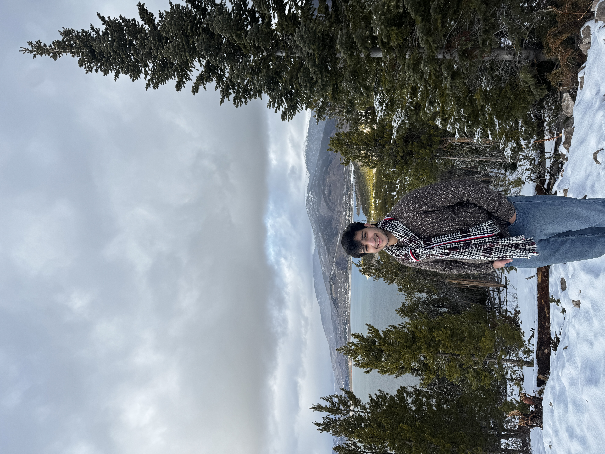

Master of Computer Science student at the University of Illinois Urbana-Champaign, in the Grainger College of Engineering, specializing in software engineering. I am interested in safety-critical systems: surgical robotics, formal verification, and medical technology built for under-resourced healthcare settings.
Previously CTO at Zetox, a behavior-change health tech startup, and founding systems engineer at Roboss, where I worked on surgical robotics. I also co-founded GitHired, a hiring platform that evaluates engineers from their GitHub profiles instead of their resumes. I graduated from Arizona State University in 2026 with a BS in Computer Science.